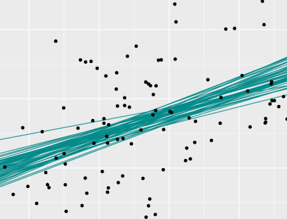

Teaching and Learning Bayesian Statistics with {bayesrules}
Talk at the Department of Statistics, University of Auckland
2024-12-11
About Bayesian Methods
Frequentist
Bayesian

Metropolis-Hastings Algorithm


Posterior Model

Bayes’ Rule
The Beta-Binomial Bayesian Model
Balance and Sequentiality in Bayesian Analysis
Conjugate Families

Grid Approximation
The Metropolis-Hastings Algorithm
Posterior Estimation
Posterior Hypothesis Testing
Posterior Prediction

Normal Regression
Poisson and Negative Binomial Regression
Logistic Regression
Naive Bayes Classification

Normal hierarchical models without predictors
Normal hierarchical models with predictors
Non-Normal Hierarchical Regression & Classification
Checking Intuition